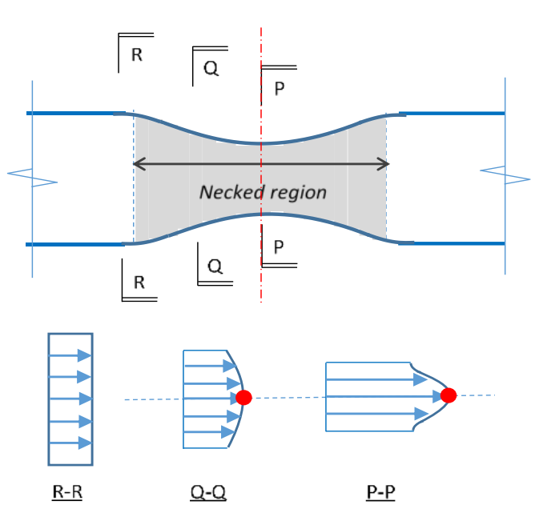
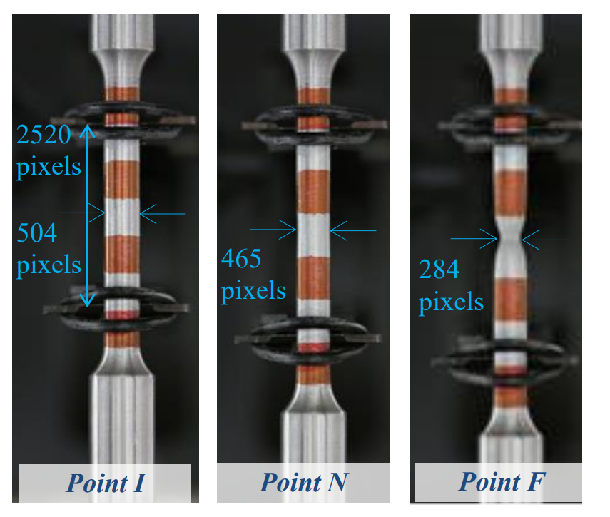
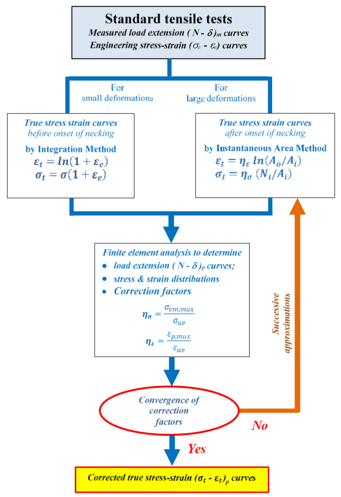

Determination of true stress strain characteristics
This paper presents recent research findings on true stress strain characteristics of normal strength S275, S355 and high strength S690 steels to EN 10025:2005. It aims to provide generalized constitutive models for analysis and design of steel structures. Comprehensive experimental and numerical investigations into mechanical properties of the structural steels have been carried out based on test results of nine monotonic tensile tests. Non-uniform stress and strain distributions within the necked region are found when the test coupons are under very large deformation. After corrections to the stress and strain non-uniformities by Instantaneous Area Method with successive approximations, true stress strain characteristics of the tested steels were successfully quantified as generalized constitutive models. Moreover, the microstructures of the typical structural steels haven been carefully examined, and their microstructural constituents are successfully quantified by Digital Image Analytics. The research findings are very important for subsequent numerical investigations into the structural performance of steel structures under very large deformations up to fracture.
True stress strain curves for engineering application
For structural engineering application, bi-linear stress strain characteristic is commonly adopted for structural analysis and design, in order to give safe and conservative design solutions. However, the analytical solutions often under-predict the structural capacities by 15 to 25%, adopting the nominal design values of mechanical properties and geometrical dimensions. Moreover, the load deformation characteristics of the building structures cannot be accurately predicted. Thus, non-linear stress strain characteristics, such as the Ramberg-Osgood model [9], is adopted for advanced structural analysis for structures undergoing small deformations, i.e. up to a strain at 5%. However, a full-range true stress strain curve is required for numerical studies of structural elements with a large deformation until fracture.

A total of nine standard tensile tests of S275, S355 and S690 steels to BS EN 10025-6:2005 in a standard size and shape were conducted to investigate their basic mechanical properties in accordance with standard testing procedures to BS EN ISO 6892-1:2009. Figure 2 illustrates a typical set-up of a standard tensile test using INSTRON 8803 universal testing system. The instantaneous dimensions of the test coupons were measured using a high resolution digital imaging system as shown in Figure 3. The basic mechanical properties are summarized in Table 1, while the measured engineering stress-strain curves are plotted in the same graph for direct comparison as shown Figure 4. The average yield strengths fy of S275, S355 and S690 coupons are found to be 352N/mm2 , 378N/mm2 , and 740N/mm2 , respectively. Their tensile strengths fu are found to be 517N/mm2 , 550N/mm2 , and 784N/mm2 , respectively. It is shown that all tensile to yield strength ratios fu/fy are found to be larger than 1.1. It should also be noted that for all these coupons, the average elongation at fracture, εL, is found to be larger than 15%. Moreover, the strains corresponding to tensile strengths, εu are larger than 15 fy / Es. Consequently, all these coupons are demonstrated to fulfil all the ductility requirements stipulated in the Structural Eurocodes.

Determination of true stress-strain characteristics using Instantaneous Area Method
Instantaneous Area Method [11-13] is adopted to determinate the true stress-strain characteristics of the tested S275, S355, and S690 steels. The tri-axial stress-strain states of the core of the neck under different strain levels are evaluated using advanced numerical modelling technique (Figure 5). As such, both stress and strain correction factors are obtained using the following formulae:
